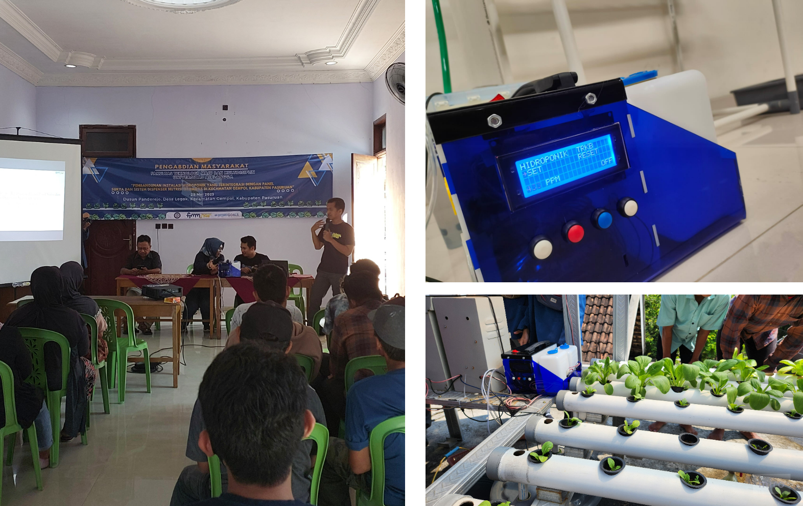

Airoponik: Automatic Nutrient Dispenser for Hydroponics
The Airoponik project aims to automate the provision of nutrients in hydroponic systems, facilitating efficient and precise nutrient delivery for optimal plant growth. This initiative was part of a community service project conducted in the Gempol sub-district, Pasuruan regency, to enhance local agricultural practices.

The automatic nutrient dispenser utilizes an ESP32 microcontroller and a Total Dissolved Solids (TDS) sensor to monitor and regulate nutrient levels in hydroponic systems. The device ensures that plants receive the right amount of nutrients at the appropriate times, thereby improving growth rates and yields.
Skills: Electronics, C++, ESP32Contribution:
- Developing the firmware to control the nutrient dispenser, integrating sensor data, and ensuring reliable operation.
- Implementing and calibrating the TDS sensor to accurately measure nutrient levels in the hydroponic solution.
- Creating an intuitive interface for users to monitor and adjust the system settings.